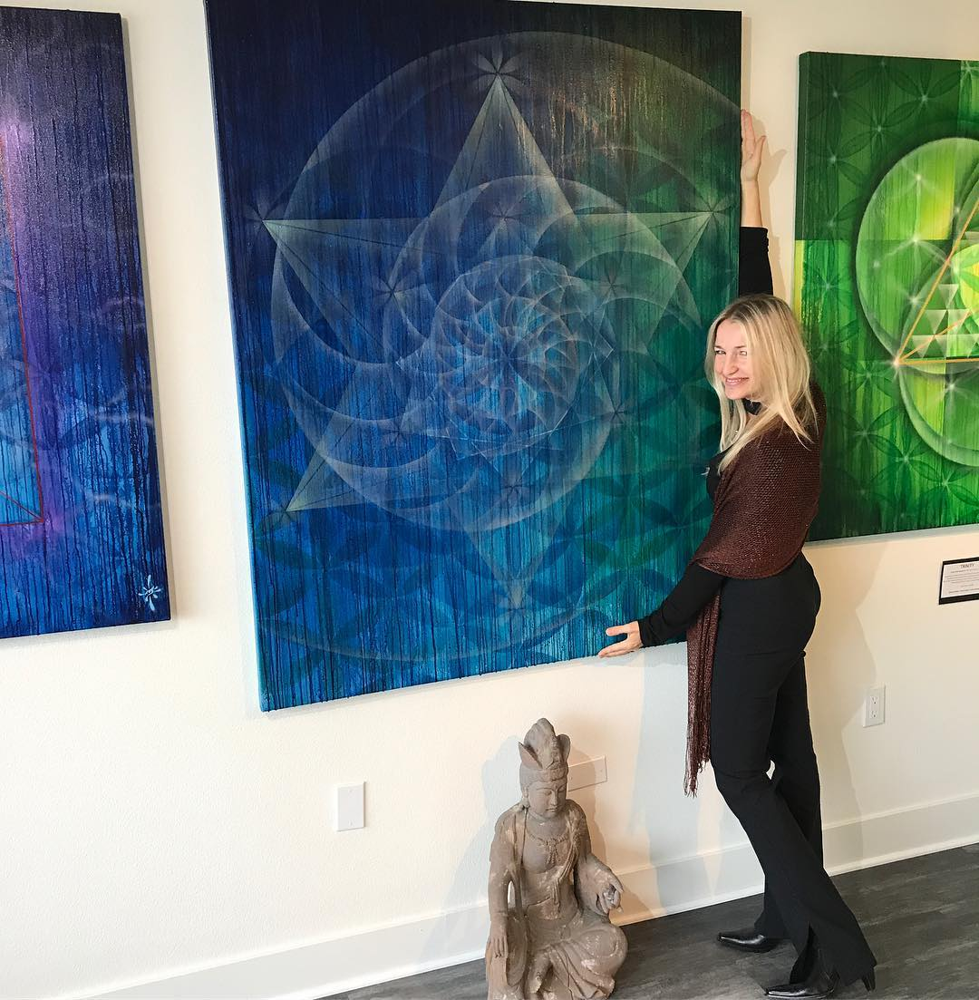
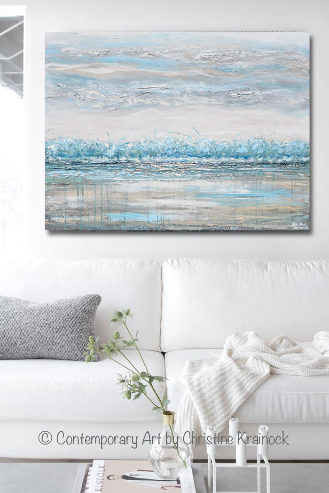

Bio
Yana Yavorskaya
Mi camino a través del arte
Pintar nunca ha sido solo una forma de crear imágenes. Para mí, siempre ha sido una manera de expresar emociones, de encontrar calma en los momentos difíciles y de transformar experiencias en color.
Cada obra nace de una historia, de un instante vivido o de una emoción que merece permanecer. Trabajo con paciencia, dejando que cada pincelada encuentre su lugar, porque creo que el arte auténtico no se puede acelerar.
A lo largo de los años he descubierto que una pintura puede hacer mucho más que decorar una pared. Puede despertar recuerdos, transmitir serenidad o crear una conexión especial con quien la contempla. Esa es la verdadera razón por la que sigo pintando.
«El arte auténtico no se puede acelerar. Cada obra nace de una historia, de un instante vivido o de una emoción que merece permanecer.»
Mi inspiración proviene de la naturaleza, de las personas y de la belleza que a menudo pasa desapercibida en la vida cotidiana. Intento capturar esos pequeños detalles que nos invitan a detenernos unos segundos y mirar el mundo con otros ojos.
Cada cuadro que comparto lleva una parte de mí. Espero que, al contemplarlo, también encuentre un lugar en tu historia y despierte una emoción única, porque el arte cobra vida cuando alguien se identifica con él.




Desde muy pequeña
Desde muy pequeña ya sentí una fortísima atracción por la pintura. Recuerdo con cinco años la impresión que me causó ponerme delante de estos dos cuadros de Velázquez en el Museo del Prado: «El Cristo» y «La Infanta Margarita».
Visitaba todos los museos con mi padre, al que perdí con doce años. La pintura era su vocación frustrada pero las circunstancias de esa época le hicieron decantarse por Derecho.
Recuerdo también cómo se me pasó el dolor después de una operación de anginas cuando me regalaron un caballete de campo y un estuche de acuarelas.
«Para mí la Pintura es una terapia, una medicina, una evasión y una forma de vida, siempre en conexión con otras formas de Arte como la Música, Literatura, Teatro, Cine…»
Formación
Con 18 años, y animada por mi madre, ingresé en la Facultad de Bellas Artes de la Complutense (Madrid). El tercer año me especialicé en grabado calcográfico, xilografía y litografía para aprender nuevas técnicas. No quise seguir la escuela de pintura del momento, consciente de que luego tendría que empezar de cero al terminar la carrera.
Me licencié en 1993 y empecé a exponer desde el primer momento. Un garaje era mi estudio y, además, allí di clases durante quince años.
Mi dedicación y pasión ha sido absoluta hasta hoy mismo. A pesar de que el camino no ha sido nada fácil he podido hacer más de veinte exposiciones individuales además de numerosas colectivas, ferias y concursos.